Shakshat Virtual Lab 
INDIAN INSTITUTE OF TECHNOLOGY GUWAHATI
Signals and their properties


Introduction to some simple signals
| ♦ Definition of Signal | ♦ Random and Deterministic Signal |
♦ Amplitude-scaling of Signal |
| ♦ Continuous-time Signal | ♦ Causal, Non-causal and Anti-causal Signal |
♦ Time-scaling of Signals |
| ♦ Discrete-time Signal | ♦ Even and Odd Signal |
♦ Time-shifting of Signal |
| ♦ Digital Signal | ♦ Real and Complex Exponential Signal |
|
| ♦ Periodic and Aperiodic Signal | ♦ Impulse Signal |

Introduction to some simple signal
Any time varying physical phenomenon that can convey information is called signal. Some examples of signals are human voice, electrocardiogram, sign language, videos etc. There are several classification of signals such as Continuous time signal, discrete time signal and digital signal, random signals and non-random signals.
A continuous-time signal is a signal that can be defined at every instant of time. A continuous-time signal contains values for all real numbers along the X-axis. It is denoted by x(t). Figure 1(a) shows continuous-time signal.
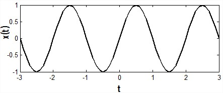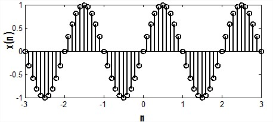
Fig.1 (a) Continuous-time signal Fig.1
(b) Discrete-time signal
Signals that can be defined at discrete instant of time is called discrete time signal. Basically discrete time signals can be obtained by sampling a continuous-time signal. It is denoted as x(n).Figure 1(b) shows discrete-time signal.
The signals that are discrete in time and quantized in amplitude are called digital signal. The term "digital signal" applies to the transmission of a sequence of values of a discrete-time signal in the form of some digits in the encoded form.
Periodic and Aperiodic Signal:
A signal is said to be periodic if it repeats itself after some amount of time x(t+T)=x(t), for some value of T. The period of the signal is the minimum value of time for which it exactly repeats itself.
| 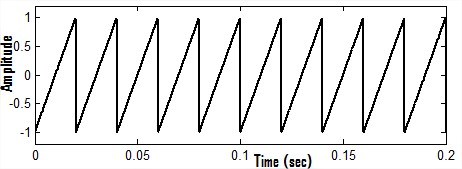 | 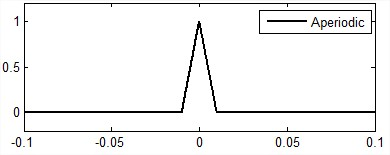 |
| Fig.2(a) Periodic signal |
Fig.2(b) Aperiodic signal |
Signal which does not repeat itself after a certain period of time is called aperiodic signal. The periodic and aperiodic signals are shown in Figure 2(a) and 2(b) respectively.
Random and Deterministic Signal:
A random signal cannot be described by any mathematical function, where as a deterministic signal is one that can be described mathematically. A common example of random signal is noise. Random signal and deterministic signal are shown in the Figure 3(a) and 3(b) respectively.
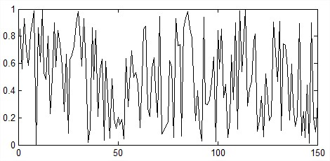 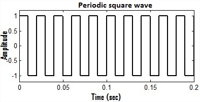
Fig.3(a) Random signal Fig.3(b) Deterministic signal
Causal, Non-causal and Anti-causal Signal:
Signal that are zero for all negative time, that type of signals are called causal signals, while the signals that are zero for all positive value of time are called anti-causal signal.
A non-causal signal is one that has non zero values in both positive and negative time. Causal, non-causal and anti-causal signals are shown below in the Figure 4(a), 4(b) and 4(c) respectively.
| 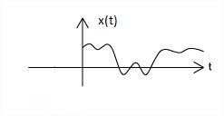 | 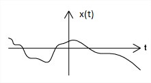 | 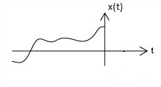 |
| Fig.4(a) Causal signal | Fig.4(b) Non-caual signal | Fig.4(c) Anti-causal signal |
An even signal is any signal 'x' such that x(t) = x(-t). On the other hand, an odd signal is a signal 'x' for which x(t) = -x(-t). Even signals are symmetric around the vertical axis, so that they can easily spotted.
| 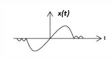 | 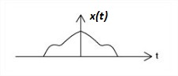 |
| Fig.5(a) Odd signal | Fig.5(b) Even signal |
An even signal is one that is invariant under the time scaling t→ - t and an odd signal is one that is invariant under the amplitude and time scaling x(t) → - x(-t).
A simple way of visualizing even and odd signal is to imazine that the ordinate [x(t)] axis is a mirror. For even signals, the part of x(t) for t > 0 and the part of x(t) for t < 0 are mirror images of each other. In case of an odd signal, the same two parts of the signals are negative mirror images of each other. Some signals are odd, some signals are even and some signals are neither odd nor even. But any signal x(t) can be expressed as a sum of its even and odd parts such as x(t) = xe(t) + xo(t) or we can say that every signal is composed of the addition of an even part and odd part. The even and odd parts of a signal x(t) are
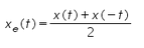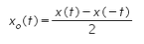
Here xe(t) denotes the even part of signal x(t) and xo(t) denotes the odd part of signal x(t). Figure 5(a) and 5(b) shows the odd signal and even signal respectively.
There are some important properties of signal such as amplitude-scaling, time-scaling and time-shifting. Among these properties now we are discussing about amplitude scaling. Consider a signal x(t) which is multiplying by a constant 'A' and this can be indicated by a notation x(t) → Ax(t). For any arbitrary 't' this multiplies the signal value x(t) by a constant 'A'. Thus, x(t) → Ax(t) multiplies x(t) at every value of 't' by a constant 'A'. This is called amplitude-scaling. If the amplitude-scaling factor is negative then it flips the signal with the t-axis as the rotation axis of the flip. If the scaling factor is -1 then only the signal will be flip. This is shown in the Figure 6(a), 6(b), 6(c) which is given below.
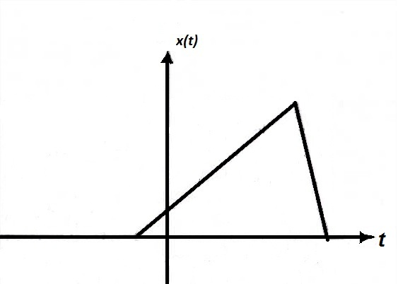 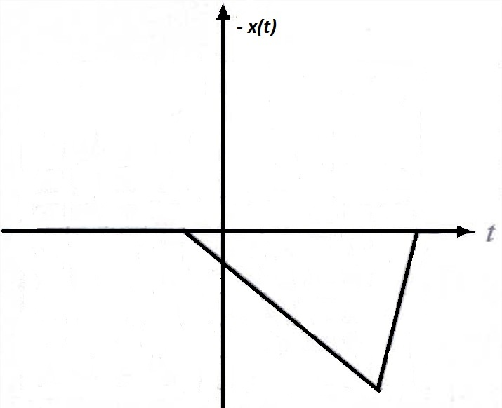 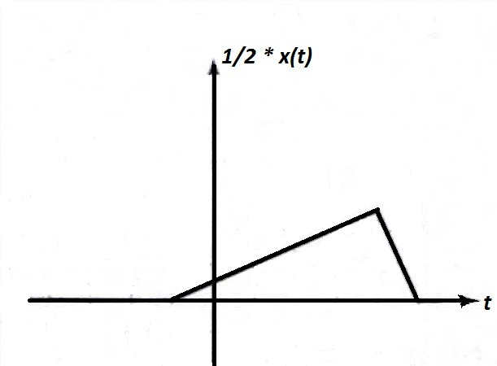
Fig.6(a) A signal x(t) Fig.6(b) A signal x(t) scaled by -1 Fig.6(c) A signal x(t) scaled by 1/2
Time scaling compresses or dilates a signal by multiplying the time variable by some quantity. If that quantity is greater than one, the signal becomes narrower and the operation is called compression. If that quantity is less than one, the signal becomes wider and the operation is called dilation. Figure 7(a), 7(b), 7(c) shows the signal x(t), compression of signal and dilation of signal respectively.
| 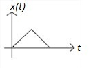 | 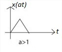 | 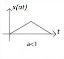 |
| Fig.7(a) Signal x(t) | Fig.7(b) Compression of signal | Fig.7(c) Dilation of signal |
In signals and system amplitude scaling, time shifting and time scaling are some important properties. If a continuous time signal is defined as x(t) = s(t - t1). Then we can say that x(t) is the time shifted version of s(t).
Consider a simple signal s(t) for 0 < t < 1
| 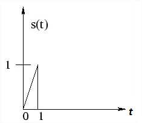 | 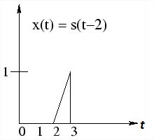 | 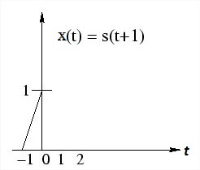 |
| Fig.8(a) Signal within 0< t < 1 | Fig.8(b) Signal shifted by 2 sec. | Fig.8(c) Signal shifted by -1 sec. |
Now shifting the function by time t1 = 2 sec.
x(t) = s (t-2) = t-2 for 0 < (t - 2) < 1
; = t-2 for 2 < (t - 2 ) < 3
Which is simply signal s(t) with its origin delayed by 2 sec.
Now if we shift the signal by t1 = -1 sec.
then x(t) = s (t+1) = t+1 for 0 < (t+1)
= t+1 for -1 < t < 0.
Which is simply s(t) with its origin shifted to the left or advance in time by 1 seconds. This time-shifting property of signal is shown in the Figure 8(a), 8(b) and 8(c) given above.
The Dirac delta function or unit impulse or often referred to as the delta function, is the function that defines the idea of a unit impulse in continuous-time. Informally, this function is one that is infinitesimally narrow, infinitely tall, yet integrates to one. Perhaps the simplest way to visualize this as a rectangular pulse from a -D/2 to a +D/2 with a height of 1/D. As we take the limit of this setup as D approaches 0, we see that the width tends to zero and the height tends to infinity as the total area remains constant at one.
The impulse function is often written as
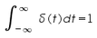
| 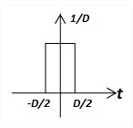 | 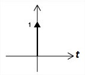 |
| Fig.9(a) Dirac delta functoin | Fig.9(b) Unit impulse |
Since it is quite difficult to draw something that is infinitely tall, we represent the Dirac with an arrow centered at the point it is applied. The dirac delta function and unit impulse are shown in Figure 9(a) and 9(b) respectively.
The impulse function has some special properties.
- The sampling property.
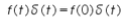
- Another important property is the scaling property.
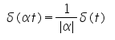
Since the derivative of the unit step u(t) is zero everywhere except at t=0, the unit impulse is zero everywhere except at t=0. Since the unit step is the integral of the unit impulse, a definite integral of the unit impulse whose integration range includes t=0 must have the value one.
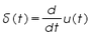, where u(t) is the unit step.
This scaling property can not be applied for discrete-time impulse.
Real and Complex Exponential Signal:
Exponential signal is of two types. These two type of signals are real exponential signal and complex exponential signal which are given below.
Real Exponential Signal:
A real exponential signal is defined as
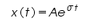
Where both "A" and "σ" are real. Depending on the value of "σ" the signals will be different. If "σ" is positive the signal x(t) is a growing exponential and if "σ" is negative then the signal x(t) is a decaying exponential. For σ=0, signal x(t) will be constant. Figure 10(a), 10(b) and 10(c) shows a dc signal, exponentially growing signal and exponentially decaying signal respectively.
| 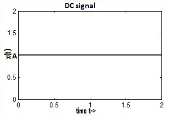 | 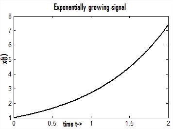 | 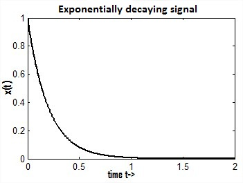 |
| Fig.10(a) A dc signal | Fig.10(b) Exponentially growing signal | Fig.10(c) Exponentially decaying signal |
Complex exponential Signal:
The complex exponential signal is given by
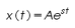
Where "s" is a complex variable and it is defined as
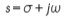
Therefore
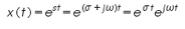 ........................(1)
Using Eulers identity
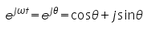 ...............................(2)
Substituting eqn.(2) in eqn.(1) we have
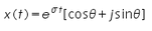
A complex exponential signal can not be plot in a two dimentional (2D) graph, it should be plot in a three dimentional graph. Figure given below shows the three dimentional view of a complex exponential signal.
Real sines and real cosines can be expressed by the combinations of complex sinusoids through the trigonometric identities
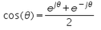 and
Complex exponential signal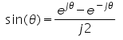, out of phase complex exponential signal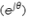and the addition and substraction of complex exponentials to form the real cosine and real sine are shown in Figure 11(a), 11(b), 11(c) and 11(d) respectively.
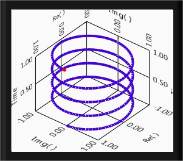 
Fig.11(a) Complex exponential signal Fig.11(b) Out of phase complex exponential signal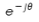
 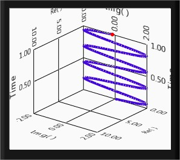
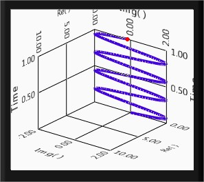
Fig.11(c)Real cosine after addition of complex sinusoids Fig.11(d) Real sine after substraction of complex sinusoids